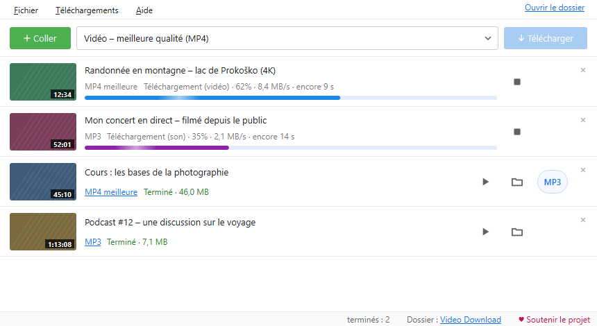

La vidéo et le son.
En un clic.
Une application gratuite pour Windows et Mac : MP4 en pleine qualité ou MP3, directement depuis le navigateur ou depuis un lien copié.
- Sans compte
- Sans limite quotidienne
- Vos liens ne nous parviennent pas
L'application est destinée à vos propres vidéos, aux contenus pour lesquels vous avez l'autorisation de l'auteur et aux contenus sous licence libre. En téléchargeant, vous acceptez les Conditions d'utilisation. Les contenus protégés par DRM ne sont pas téléchargés.
Essayez : cliquez sur + Coller.
Tout ce qu'il faut,
rien de superflu.
Une fenêtre simple, et en dessous tout ce qu'on attend d'un bon téléchargeur.
MP4 jusqu'à la meilleure qualité
Meilleure, 1080p, 720p ou 480p. L'image et le son sont réunis dans un MP4 (H.264/AAC si le site le propose) lisible sur la plupart des appareils.

Son uniquement : MP3 ou M4A
Pour les cours, les podcasts et la musique. Un MP4 terminé devient un MP3 d'un seul bouton.
Copiez un lien, c'est tout
L'application repère un lien copié et l'ajoute à la file.
Playlists, plusieurs à la fois
Des playlists entières, jusqu'à 4 téléchargements simultanés, nouvelle tentative automatique si la connexion coupe.
Extraits, sous-titres, pochette
Seulement une partie d'une vidéo, les sous-titres dans le MP4 et la miniature comme pochette du fichier.
Thème clair et sombre
Ou comme le système. La progression dans la barre des tâches et une notification à la fin.
Toujours à jour, et sûr
L'application cherche elle-même les nouvelles versions, met à jour la partie qui lit les sites sans réinstallation. Sous Windows, elle n'installe que des mises à jour signées numériquement par nous ; sur Mac (bêta), les nouvelles versions se téléchargent à la main pour l'instant.
Téléchargez ce qui est en lecture.
Lancez une vidéo, cliquez sur l'icône, c'est fait. Ou clic droit sur n'importe quel lien ou vidéo. L'application démarre toute seule si elle n'est pas ouverte.
- Firefox : un clic, signée par Mozilla, se met à jour toute seule
- Edge et Chrome : chargée une fois depuis le dossier de l'application
- Les directs et les vidéos protégées par DRM ne sont pas téléchargés
Votre premier fichier en quelques minutes.
Installez une fois, puis copiez simplement des liens.
Installer
Pas besoin d'administrateur, rien d'autre n'est ajouté à votre ordinateur.
Ajouter un lien
Copiez un lien, cliquez sur « Coller » ou utilisez l'extension.
Télécharger
MP4 ou MP3, puis « Télécharger ». Le fichier vous attend dans le dossier Video Download.
Premier lancement, pas à pas.
L'application n'a pas encore de certificat payant, votre système demande donc une fois. Les mises à jour depuis l'application ne demandent rien.
Windows peut afficher « Windows a protégé votre ordinateur ». Vérifiez que le fichier provient de ce site, puis cliquez sur Informations complémentaires et Exécuter quand même.
Bêta Nouveau : Video Download pour Mac. Pour les Mac avec puce Apple (M1 ou plus récent) et macOS 13 ou plus récent. Il fonctionne, mais peu de personnes l'ont encore essayé : signalez ce qui ne marche pas.
La version Mac n'est pas encore signée par Apple, le premier lancement demande donc quelques clics de plus :
- Ouvrez le .dmg téléchargé et glissez Video Download dans Applications.
- Ouvrez l'app. macOS indique qu'il ne peut pas la vérifier : fermez le message (pas « Placer dans la corbeille »).
- Allez dans Réglages Système → Confidentialité et sécurité, faites défiler vers le bas, cliquez sur Ouvrir quand même et saisissez le mot de passe du Mac.
- Rouvrez l'app et confirmez Ouvrir. Cela n'est nécessaire qu'une fois.
Bêta Nouveau : Video Download pour Android. Pour les téléphones sous Android 10 ou plus récent. Partagez une vidéo depuis n'importe quelle application et choisissez la qualité. Ça fonctionne, mais peu de personnes l'ont encore essayé : signalez tout ce qui ne marche pas.
L'application n'est pas sur Google Play, la première installation demande donc quelques touches de plus :
- Ouvrez le fichier téléchargé (Téléchargements ou la liste des téléchargements du navigateur).
- Si Android le demande, autorisez l'installation depuis votre navigateur : Paramètres → Autoriser cette source.
- Sur les téléphones Samsung, désactivez Auto Blocker pour l'installation (Paramètres → Sécurité et confidentialité).
- Si Google Play Protect signale une application inconnue, touchez Plus de détails → Installer quand même.
- Les nouvelles versions s'installent depuis l'application : Réglages → Rechercher des mises à jour.
Meilleur chaque semaine.
La même liste que dans l'application (Aide → Nouveautés).
0.9.7 27.9.2026
- Messages d'erreur compréhensibles dans la langue du programme (p. ex. « La vidéo n'est plus disponible », « Impossible de joindre le site ») ; le message technique reste dans l'info-bulle et dans le rapport de problème.
- Deux téléchargements n'écrivent jamais le même fichier : ni la même vidéo via deux liens, ni de longs titres qui commencent pareil, ni des extraits dans la même seconde ; un MP3 de la même vidéo ne supprime plus le MP4 déjà téléchargé.
- La file s'enregistre toute seule après chaque modification : un plantage ou une coupure de courant ne fait perdre aucun lien ; « Tout télécharger » pendant la lecture d'un lien démarre dès que le lien arrive.
- « Arrêter » arrête aussi la conversion en MP3, tandis que « Tout retirer de la liste » et « Effacer les terminés » gardent un MP3 encore en cours ; fermer le programme ne lance plus de nouveaux téléchargements.
- Une nouvelle tentative après une coupure de connexion attend vraiment 5 secondes ; le rapport de problème masque mieux les mots de passe et les clés.
- L'extension du navigateur ouvre une page d'accueil à l'installation (vérifie la connexion au programme, montre comment épingler l'icône) ; bouton × plus grand et une plus belle image pendant le chargement de la miniature.
0.9.6 26.9.2026
- Les mises à jour sont signées numériquement : le programme n'installe qu'une nouvelle version signée par nous, même si quelqu'un remplace le fichier publié.
- Au premier démarrage, un court avis indiquant que le programme surveille les liens copiés, avec un bouton pour le désactiver tout de suite.
- Les fichiers temporaires de cookies restants (après un arrêt brutal) sont supprimés au démarrage suivant ; les longues listes utilisent moins de mémoire.
- La connexion avec le module du navigateur résiste mieux aux requêtes lentes ou bloquées.
0.9.5 26.9.2026
- 1080p, 720p et 480p reçoivent une marque dans le nom du fichier : une autre qualité de la même vidéo n'est plus « déjà téléchargée ».
- Deux vidéos du même titre (nom sans ID) ne se mélangent plus ; la même vidéo lancée deux fois en même temps attend la première.
- « Terminé » seulement quand le fichier existe et est lisible ; la conversion en MP3 peut toujours être arrêtée.
- La fermeture ne fige plus la fenêtre ; la mise à jour attend aussi les conversions en MP3.
L'application est gratuite.
Sans publicité, sans pistage et sans version « premium ». Si elle vous est utile, vous pouvez soutenir son développement librement. Une contribution ne débloque rien : l'application est la même pour tous.
 Scannez avec l'appareil photo du téléphone
Scannez avec l'appareil photo du téléphoneDes questions ?
Si quelque chose ne marche pas : dans l'application, Aide → Enregistrer un rapport de problème, puis signalez le problème. Les signalements sont publics : n'y mettez ni mots de passe ni données personnelles.
Une vidéo ne se télécharge soudain plus.
Les sites changent souvent. Aide → Mettre à jour le lecteur de sites (yt-dlp), puis réessayez.
Pourquoi les directs ne sont-ils pas téléchargés ?
Un direct n'a pas de fin, le téléchargement ne se terminerait donc jamais. Téléchargez-le une fois terminé, quand l'enregistrement est publié.
Qu'envoie l'application sur Internet ?
Seulement le nécessaire : le lien que vous téléchargez va vers ce site, et la recherche de mises à jour vers GitHub et PyPI. Ni compte, ni statistiques, ni pistage.
Est-ce sûr ?
Le code est public sur GitHub, chaque programme d'installation a une somme SHA-256 et l'application n'installe sous Windows que des mises à jour signées par nous (sur Mac, bêta, à la main pour l'instant).